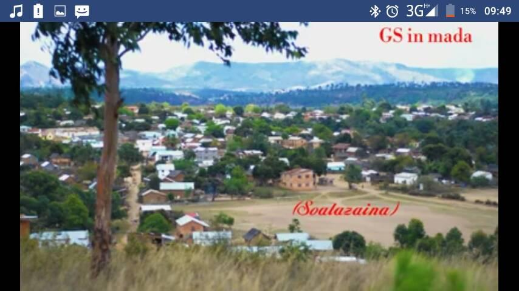

About my home village

This village is still a rural village but well-known to everyone.
It is surrounded by green spaces including pine forests.
If people have never been there, it is easy for them to know that Soalazaina
is near when they got into a pine forest. Saturday is the market day in there.
I can say that 80 per cent of the population are farmers.
What makes it special
There is a company called Bdf in there. It is a Chinese company.
It is so popular in Ambatondrazaka district. Lots of people come to visit that company.
They went there to search a job. Even people far from the village came there to visit it.
They are inquisitive about it.
Bdf company
I would like to tell you about this company. Bdf is a big company which is in Soalazaina.
It started in 2014.
The majority of the people who work in there are women, it is about 70 per cent of the workers.
They plant something like mushroom but it looks like taro.
Lots of people have been asked about their products but
they have never told to anyone what they need it for.